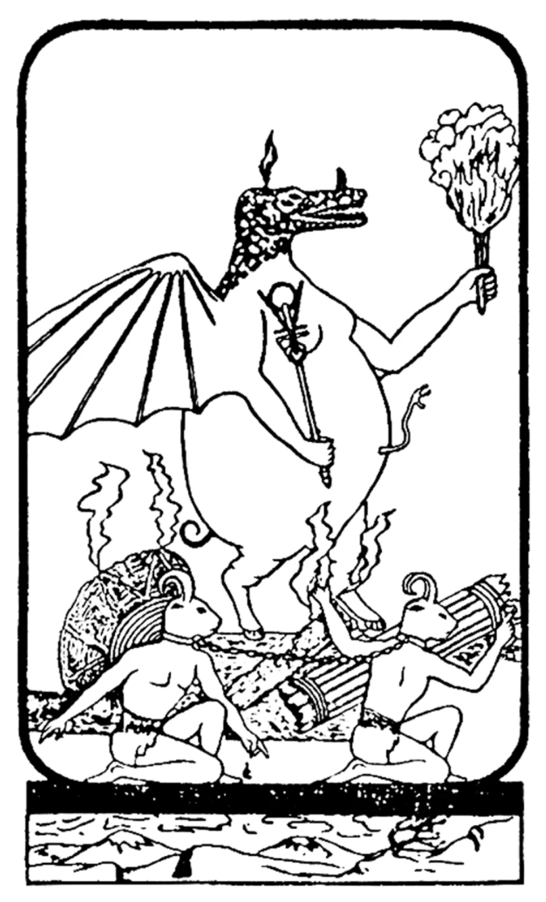
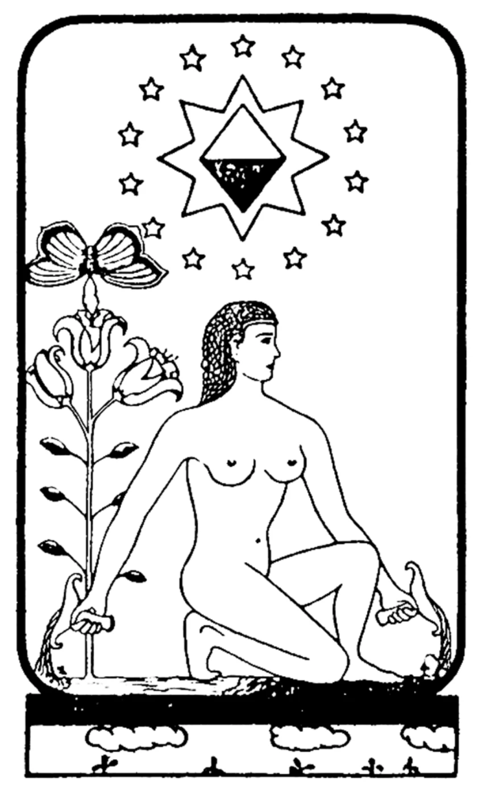
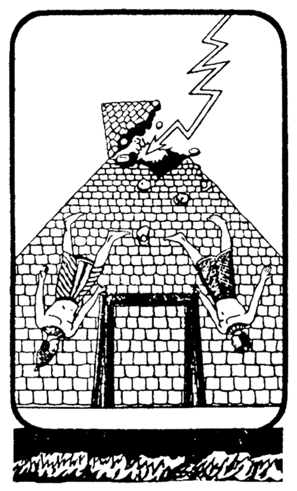
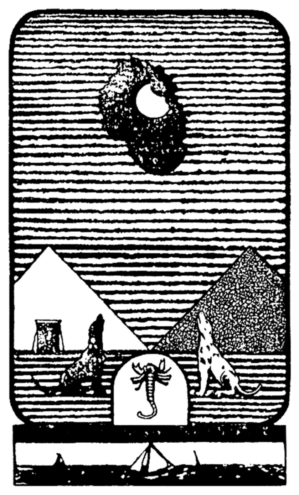
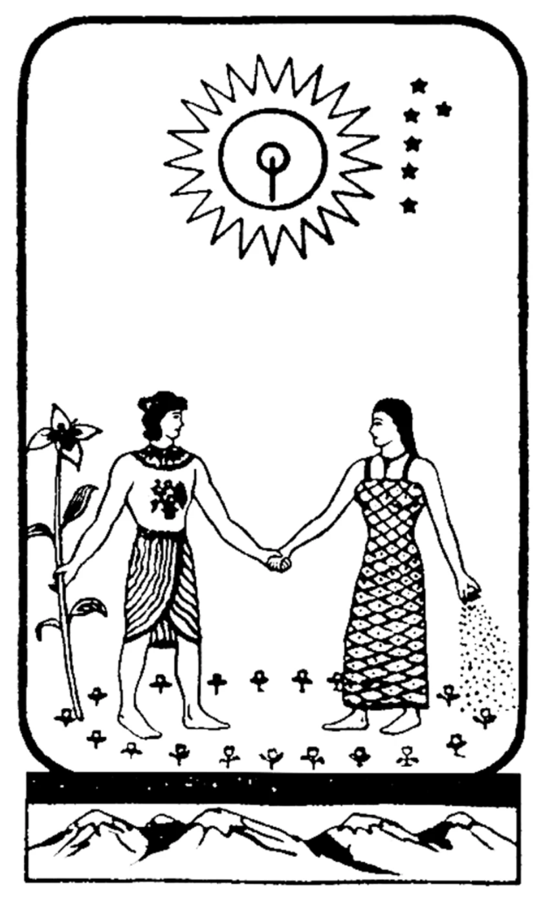
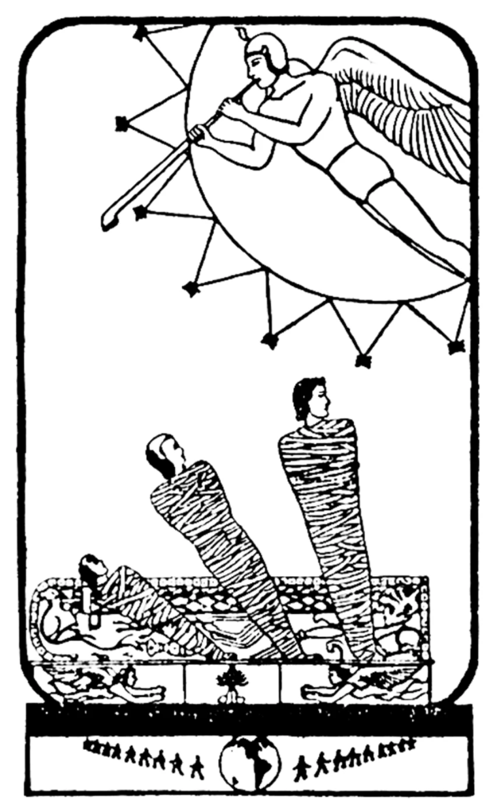
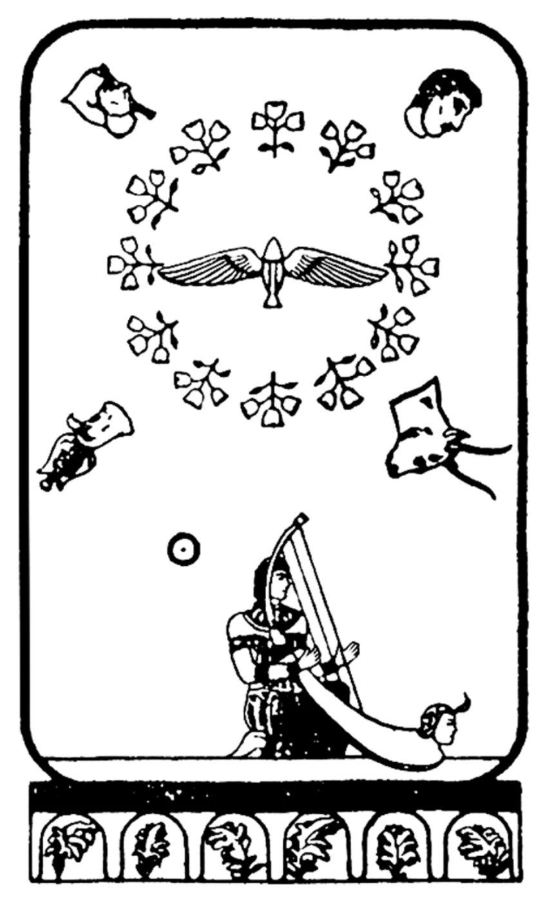

| 80.0 | RA:
I am Ra. We greet you in the love and in the light of the One Infinite Creator.
Before we initiate this working we would wish to correct an error which we have found in previous material. That archetype, Five, which you have called the Hierophant, is the Significator of the Mind complex. This instrument is prey to sudden flares towards the distortion known as pain. We are aware of your conscientious attempts to aid the instrument but know of no other modality available to the support group other than the provision of water therapy upon the erect spinal portion of the physical body complex, which we have previously mentioned. This instrument’s distortions of body do not ever rule out, shall we say, such flares during these periods of increased distortion of the body complex. Our contact may become momentarily garbled. Therefore, we request that any information which seems garbled be questioned as we wish this contact to remain as undistorted as the limitations of language, mentality, and sensibility allow. We communicate now.
|
| Ра: Я есмь Ра. Мы приветствуем вас в любви и свете Единого Бесконечного Создателя.
Прежде чем мы начнём этот сеанс мы бы хотели исправить ошибку которую мы обнаружили в предыдущем материале. Архетип Пять, который вы назвали Иерофантом, это Сигнификатор Комплекса Разума. Этот инструмент подвержен внезапным вспышкам в сторону искривления известного как боль. Мы осведомлены о ваших добросовестных попытках помочь инструменту но не знаем какого-либо другого способа доступного группе поддержки нежели оказание водной терапии на выпрямленную спинномозговую часть комплекса физического тела, что ранее мы уже упоминали. Искривления тела этого инструмента никогда не исключают, скажем так, такие вспышки во время этих периодов более интенсивных искривлений телесного комплекса. Наш контакт может на мгновение прерваться. Поэтому мы просим чтобы вы подвергали сомнению любую информацию которая кажется искаженной, поскольку мы хотим чтобы этот контакт оставался настолько неискаженным, насколько это позволяют языковые ограничения, менталитет и чувствительность. Теперь мы общаемся.
|
| 80.1 | QUESTIONER: Thank you. Could you please give me the condition of the instrument? |
| Собеседник: Спасибо. Не могли бы вы пожалуйста рассказать о состоянии инструмента?
|
|
| RA:
I am Ra. This instrument is experiencing mild fluctuations of the
physical energy complex which are causing sudden changes from physical
energy deficit to some slight physical energy. This is due to many, what
you may call, prayers and affirmations offered to and by the instrument—
offset by continual greetings whenever it is feasible by the fifth-density
entity of whom you are aware.
In other respects, the instrument is in the previously stated condition.
|
|
| Ра: Я есмь Ра. Этот инструмент переживает небольшие флуктуации комплекса
физической энергии которые приводят к внезапным изменениям от дефицита
физической энергии до некоторого незначительного количества физической
энергии. Это происходит из-за многих, как вы бы сказали, молитв и аффирмаций
предоставленных инструменту и инструментом - которые искажаются постоянными
приветствиями (т.е. психическими атаками, примеч.пер.) всегда
когда появляется подходящая возможность у существа пятой плотности о котором
вы уже знаете.
В остальном инструмент находится в прежнем состоянии.
|
| 80.2 | QUESTIONER:
I had to leave the room for a forgotten item after we
performed the banishing ritual. Did this have a deleterious effect on the
ritual or the working?
|
| Собеседник: Мне пришлось покинуть комнату из-за забытой вещи после того как мы совершили
изгоняющий ритуал. Имело ли это пагубный эффект на ритуал или на сеанс?
|
|
| RA:
I am Ra. Were it the only working the lapse would have been critical.
There is enough residual energy of a protective nature in this place of
working that this lapse, though quite unrecommended, does not
represent a threat to the protection which the ritual of which you spoke offers.
|
|
| Ра: Я есмь Ра. Еслиб это был единственным сеансом то эта оплошность была бы
критической. Однако в этом месте работы есть достаточно остаточной энергии
защитного характера что эта оплошность, хоть она и не рекомендуется, не
представляет угрозы для защиты которую ритуал о котором вы говорите, предоставляет.
|
| 80.3 | QUESTIONER:
Has our fifth-density visitor been less able to affect the
instrument during our more recent workings?
|
| Собеседник: Был ли наш гость из пятой плотности менее способен влиять на инструмент
во время последних сеансов?
|
|
| RA:
I am Ra. We shall answer in two parts.
Firstly, during the workings themselves the entity has been bated to a great extent. Secondly, in the general experiential circumstance of your space/time experience, this fifth-density entity is able to greet this entity with the same effectiveness upon the physical body complex as always since the inception of its contact with your group. This is due to the several physical-complex distortions of the instrument. However, the instrument has become more mentally and spiritually able to greet this entity with love, thereby reducing the element of fear which is an element the entity counts as a great weapon in the attempt to cause cessation, in any degree, of the Ra contact.
|
|
| Ра: Я есмь Ра. Мы ответим в двух частях.
Во первых, во время самих сеансов существо было в значительной степени подавлено. Во вторых, в общих эмпирических условиях вашего переживания пространства/времени, это существо из пятой плотности способно приветствовать это существо с той же эффективностью на физический комплекс тела как и раньше с начала его контакта с вашей группой. Это происходит из-за нескольких искривлений физического комплекса инструмента. Однако, этот инструмент стал более способным ментально и духовно приветствовать это существо с любовью, таким образом уменьшая элемент страха который существо (пятой плотности) считает отличным оружием в попытке спровоцировать прекращение, в любой степени, контакта с Ра.
|
| 80.4 | QUESTIONER:
What is the reason for the fact that the entity is able to act
through physical distortions that are already present as opposed to being
unable to act on an entity who’s had no physical distortions at all?
|
| Собеседник: По какой причине существо (пятой плотности) способно
действовать через физические искривления которые уже есть в наличии, в отличие
от неспособности влиять на существо у которого небыло вообще никаких физических
искривлений?
|
|
| RA:
I am Ra. The key to this query is the term “distortion.” Any
distortion — be it physical, mental, or spiritual in complex nature — may
be accentuated by the suggestion of one able to work magically; that is, to
cause changes in consciousness.
This entity has many physical distortions. Each in the group has various mental distortions. Their nature varies. The less balanced the distortion by self-knowledge, the more adeptly the entity may accentuate such a distortion in order to mitigate against the smooth functioning and harmony of the group.
|
|
| Ра: Я есмь Ра. Ключ к этому вопросу является термин "искривление". Любое
искривление - будь то физическое, ментальное, или духовное имеющее сложную
природу - может быть усилено при помощи подсказки/предложения того кто способен
использовать магию; то есть, приводить к изменениям в сознании.
У этого существа много физических искривлений. У каждого в этой группе есть разные ментальные искривления. Их природа разнообразна. Чем меньше искривление сбалансировано при помощи самопознания, тем более умело существо (из пятой плотности) может усиливать такое искривление для того чтобы смягчить/подпортить спокойную работу и гармонию группы.
|
| 80.5 | QUESTIONER:
As Ra well knows, the information that we accumulate here
will be illuminating to but a very minor percentage of those who populate
this planet presently simply because there are very, very few people who
can understand it. However, it seems that our fifth-density visitor is, shall
we say, dead set against this communication.
Can you tell me why this is so important to him since it is of such a limited effect, I would guess, upon the harvest of this planet? Since it seems to me that those who will understand this information will quite possibly already be within the limits of harvestability.
|
| Собеседник: Как Ра знает, информация которую мы здесь получаем будет просвящать лишь очень
небольшой процент тех кто нынче обитают на этой планете, просто потому что есть
очень, очень мало людей которые могут это понять. Однако, похоже что наш гость
из пятой плотности, скажем так, настроен очень серьёзно против этого общения.
Не могли бы вы сказать почему это так важно для него учитывая что это имеет настолько малый эффект, как мне кажется, на урожай этой планеты? Поскольку мне кажется что те кто поймут эту информацию скорее всего уже будут в пределах пригодности для урожая.
|
|
| RA:
I am Ra. Purity does not end with the harvest of third density. The
fidelity of Ra towards the attempt to remove distortions is total. This
constitutes an acceptance of responsibility for service to others which is of
relative purity.
The instrument through which we speak and its support group have a similar fidelity and, disregarding any inconvenience to self, desire to serve others. Due to the nature of the group the queries made to us by the group have led rapidly into somewhat abstruse regions of commentary. This content does not mitigate against the underlying purity of the contact. Such purity is as a light. Such an intensity of light attracts attention.
|
|
| Ра: Я есмь Ра. Чистота не заканчивается урожаем третьей плотности. Преданность
Ра попытке удалить искривления является тотальным. Это включает в себя принятие
ответственности служения другим которая имеет относительную чистоту.
Инструмент через который мы говорим и его группа поддержки имеют похожую преданность и, невзирая не неудобства для себя, желают служить другим. Из-за природы этой группы вопросы заданные нам этой группой привели достаточно быстро к довольно запутанным/сложным комментариям. Это содержание не влияет на чистоту контакта, лежащую в его основе. Такая чистота она как свет. Такая интенсивность света привлекает внимание.
|
| 80.6 | QUESTIONER:
What would our fifth-density visitor hope to gain for himself
if he were to be successful in terminating this contact?
|
| Собеседник: На что расчитывает наш гость из пятой плотности для себя лично еслиб
он достиг своей цели положить конец этому контакту?
|
|
| RA:
I am Ra. As we have previously stated, the entity hopes to gain a
portion of that light; that is, the mind/body/spirit complex of the
instrument. Barring this, the entity intends to put out the light.
|
|
| Ра: Я есмь Ра. Как мы ранее говорили, это существо надеется получить часть этого
света; то есть, комплекс ума/тела/духа этого инструмента. В противном случае
существо намеревается погасить этот свет.
|
| 80.7 | QUESTIONER:
I understand this up to a point - that point is if the entity
were successful in either of these attempts, of what value would this be to
him? Would it increase his ability? Would it increase his polarity? By
what mechanism would it do whatever it does?
|
| Собеседник: Я понимаю это лишь до определённой точки, суть которой в том что если бы
существо добилось успеха в любой из этих попыток, какую ценность это имело бы для
него? Увеличило бы это его способности? Увеличило бы это его полярность?
Каким способом оно бы добилось того к чему стремится?
|
|
| RA:
I am Ra. Having attempted for some of your space/time with no
long-lasting result to do these things, the entity may be asking this
question of itself.
The gain for triumph is an increase in negative polarity to the entity in that it has removed a source of radiance and, thereby, offered to this space/time the opportunity of darkness where there once was light. In the event that it succeeded in enslaving the mind/body/spirit complex of the instrument it would have enslaved a fairly powerful entity, thus adding to its power.
|
|
| Ра: Я есмь Ра. Пытаясь добиться этого на протяжении некоторого вашего
пространства/времени без какого-либо долгосрочного результата, существо
вероятно само задаёт себе этот вопрос.
Выигрыш от триумфа - это усиление отрицательной полярности существа в том смысле, что оно удалило источник сияния и, таким образом, предоставило этому пространству/времени возможность наступления тьмы там, где когда-то был свет. Еслиб у него получилось поработить этот комплекс ума/тела/духа инструмента то оно бы поработило довольно могущественное существо, таким образом получая ещё больше власти.
|
| 80.8 | QUESTIONER:
I am sorry for my lack of penetration of these mechanisms,
and I apologize for some rather stupid questions, but I think we have here
a point that is somewhat central to what we are presently attempting to
understand. So even though my next questions may be almost
unacceptably stupid, I will attempt to try to understand what this power
that our visitor seeks is and how he uses it. For it seems to me that this is
central to the mind and the evolution of it in which we are involved.
As this entity that is our visitor increases his power through these works, what is the power that he increases? Can you describe it?
|
| Собеседник: Я прошу прощения за то что я не могу понять суть этих механизмов и за
некоторые довольно глупые вопросы, но я думаю что мы тут столкнулись с идеей которая
очень важна для того что мы нынче пытаемся понять. Поэтому даже если мой следующий
вопрос будет слишком глупым, я попытаюсь понять чем является эта власть которой
добивается наш гость и как он ею пользуется. Поскольку мне кажется что это имеет
центральное значение для разума и для его эволюции в которой мы принимаем участие.
По мере того как это существо увеличивает свою власть посредством этих работ, что за власть/силу он увеличивает? Не могли бы вы это описать?
|
|
| RA:
I am Ra. The power of which you speak is a spiritual power. The
powers of the mind, as such, do not encompass such works as these.
You may, with some fruitfulness, consider the possibilities of moonlight. You are aware that we have described the Matrix of the Spirit as a night. The moonlight, then, offers either a true picture seen in shadow, or chimera and falsity. The power of falsity is deep, as is the power to discern truth from shadow. The shadow of hidden things is an infinite depth in which is stored the power of the One Infinite Creator. The adept, then, is working with the power of hidden things illuminated by that which can be false or true. To embrace falsity, to know it, to seek it, and to use it gives a power that is most great. This is the nature of the power of your visitor and may shed some light upon the power of one who seeks in order to serve others as well, for the missteps in the night are oh! so easy.
|
|
| Ра: Я есмь Ра. Сила о которой ты говоришь это духовная сила. Сила разума, как
таковая, не распространяется на подобные работы.
Вы можете с некоторой пользой для себя рассмотреть возможности лунного света. Вы знаете, что мы описали Матрицу Духа как ночь. Лунный свет в таком случае предоставляет либо реальную картину видимую в тени, либо химеру и фальшь. Сила фальша глубока, как и сила распознавания правды в тени. Тень скрытых вещей это бесконечная бездна в которой хранится сила Единого Бесконечного Создателя. Таким образом адепт работает с силой скрытых вещей освещаемых тем что может быть ложным или истинным. Принятие лжи, познание ее, поиск ее и использование дают величайшую силу. Такова природа силы/власти вашего гостя и может пролить некоторый свет на силу того, кто тоже стремится служить и другим, поскольку ошибка в ночи даётся так легко!
|
| 80.9 | QUESTIONER:
Are you saying, then, that this power is of the spirit and not of the mind or the body?
|
| Собеседник: Вы хотите сказать что это сила духа, а не разума или тела?
|
|
| RA:
I am Ra. The work of the adept is based upon previous work with the
mind and the body, else work with the spirit would not be possible on a
dependable basis. With this comment we may assert the correctness of
your assumption.
|
|
| Ра: Я есмь Ра. Работа адепта основана на предыдущей работе с умом и телом,
иначе работа с духом была бы невозможна на надежной основе. Этим комментарием
мы может подтвердить правильность твоего предположения.
|
| 80.10 | QUESTIONER:
Now, the fifteenth archetype, which is the Matrix of the
Spirit, has been called the Devil. Can you tell me why that is so?
|
| Собеседник: Итак, арехтип пятнадцать, который является Матрицей Духа, был назван Дьяволом.
Не могли бы вы рассказать почему он был так назван?
Карта 15, Матрица Духа (Дьявол, Ночь/Тьма):

|
|
| RA:
I am Ra. We do not wish to be facile in such a central query, but we
may note that the nature of the spirit is so infinitely subtle that the
fructifying influence of light upon the great darkness of the spirit is very
often not as apparent as the darkness itself.
The progress chosen by many adepts becomes a confused path as each adept attempts to use the Catalyst of the Spirit. Few there are which are successful in grasping the light of the sun. By far, the majority of adepts remain groping in the moonlight and, as we have said, this light can deceive as well as uncover hidden mystery. Therefore, the melody, shall we say, of this Matrix often seems to be of a negative and evil, as you would call it, nature. It is also to be noted that an adept is one which has freed itself more and more from the constraints of the thoughts, opinions, and bonds of other- selves. Whether this is done for service to others or service to self, it is a necessary part of the awakening of the adept. This freedom is seen by those not free as what you would call evil or black. The magic is recognized; the nature is often not.
|
|
| Ра: Я есмь Ра. Мы не хотели бы быть поверхностными в таком важном вопросе, но
мы можем заметить что природа духа настолько бесконечно тонка что плодоносящее
влияние света на великую тьму духа очень часто не настолько очевидна как сама тьма.
Прогресс выбранный многими адептами становится запутанным путём по мере того как каждый адепт пытается использовать Катализатор Духа. Мало тех у кого получается понять свет солнца. Подавляющее большинство адептов продолжают блуждать в лунном свете, и как мы уже говорили, этот свет может как вводить в заблуждение так и раскрыть скрытую тайну. Поэтому мелодия, скажем так, этой Матрицы часто напоминает отрицательную или злую, как вы бы сказали, природу. Также следует отметить что адепт это тот кто всё больше освобождает себя от ограничений мыслей, мнений и связей с другими "я". Вне зависимости если это делается для служения другим или служения себе, это является необходимой частью пробуждения адепта. Эта свобода видится теми кто не свободны, как то что вы бы назвали злом или тьмой. Магия распознаётся; а природа часто нет.
Карта 17, Катализатор Духа (Вера, Надежда, или Звезда):

|
| 80.11 | QUESTIONER:
Could I say, then, that implicit in the process of becoming
adept is the possible partial polarization towards service to self because
simply the adept becomes disassociated with many of his kind or like in
the particular density which he inhabits?
|
| Собеседник: Можно ли тогда сказать что в процессе становления адептом подразумевается
возможная частичная поляризация в сторону служения себе, просто потому что адепт теряет
связь со многими себе подобными в конкретной плотности в которой он обитает?
|
|
| RA:
I am Ra. This is likely to occur. The apparent happening is
disassociation: whether the truth is service to self and thus true
disassociation from other-selves, or service to others and thus true
association with the heart of all other-selves and disassociation only from
the illusory husks which prevent the adept from correctly perceiving the
self and other-self as one.
|
|
| Ра: Я есмь Ра. Это скорее всего произойдёт. Очевидное происходящее это
диссоциация: будь то если правда это служение себе и таким образом диссоциация от
других "я", или служение другим и таким образом настоящая ассоциация с сутью
всех других "я" и диссоциация лишь от иллюзорных оболочек которые не позволяют
адепту правильно воспринимать себя и другого "я" как единое.
|
| 80.12 | QUESTIONER:
Then you say that this effect of disassociation on the service-
to-others adept is a stumbling block or slowing process in reaching that
goal which he aspires to? Is this correct?
|
| Собеседник: Хотите сказать что этот эффект диссоциации на адепта ориентирующегося
на служение другим, является препятствием или замедляет процесс достижения
той цели к которой он стремится? Это верно?
|
|
| RA:
I am Ra. This is incorrect. This disassociation from the miasma of
illusion and misrepresentation of each and every distortion is a quite
necessary portion of an adept’s path. It may be seen by others to be
unfortunate.
|
|
| Ра: Я есмь Ра. Это не так. Эта диссоциация от миазмы иллюзии и ложного
представления каждого искривления является довольно нужной частью пути адепта.
Посторонним это может видиться как нечто достойное сожаления.
|
| 80.13 | QUESTIONER:
Then, is this, from the point of view or with respect to the
fifteenth archetype, somewhat of an excursion into the Matrix of the
Spirit in this process? Does that make any sense?
|
| Собеседник: Тогда с точки зрения пятнадцатого архетипа является ли это своего рода
экскурсией в Матрицу Духа в этом процессе? Имеет ли этот вопрос какой-то смысл?
|
|
| RA:
I am Ra. The excursion of which you speak and the process of
disassociation is most usually linked with that archetype you call Hope -
which we would prefer to call Faith. This archetype is the Catalyst of the
Spirit and, because of the illuminations of the Potentiator of the Spirit,
will begin to cause these changes in the adept’s viewpoint.
|
|
| Ра: Я есмь Ра. Экскурсия о которой ты говоришь и процесс диссоциации как
правило связан с архетипом который вы называете Надеждой - который мы
бы предпочли называть Верой (не в контексте религии, а воли,
примеч.пер.). Этот архетип это Катализатор Духа и, из-за
озарений Потенциатора Духа они начнут вызывать изменения во взглядах адепта.
Карта №16: Потенциатор Духа (молния ударила в башню)

|
| 80.14 | QUESTIONER:
I didn’t intend to get too far ahead of my questioning process
here. The either positively or negatively polarized adept, then, is building
a potential to draw directly on the spirit for power. Is this correct?
|
| Собеседник: Я не собирался забегать здесь слишком далеко вперёд в процессе вопрошания.
Тогда получается что положительно или отрицательно поляризованный адепт создаёт
потенциал для использования силы прямо от духа. Это верно?
|
|
| RA:
I am Ra. It would be more proper to say that the adept is calling
directly through the spirit to the universe for its power, for the spirit is a
shuttle.
|
|
| Ра: Я есмь Ра. Было бы правильнее сказать что адепт взывает о силе напрямую
к вселенной через свой дух, поскольку дух является шаттлом/челноком.
|
| 80.15 | QUESTIONER:
Now, the obvious only significant difference, I believe,
between the positive and negative adept in using this shuttle is the way
they had polarized. Is there a relationship between the archetypes of the
spirit and whether the polarization is either positive or negative? Is, for
instance, the positive calling through the sixteenth and the [chuckles]
negative calling through the fifteenth archetype? I am very confused on
these points, and I imagine that question is poor or meaningless. Can you
answer that?
|
| Собеседник: Итак, кажется что при использовании этот шаттла единственной очевидной разницей
между положительным и отрицательным адептом является то как они поляризованы.
Есть ли какая-то взаимосвязь между архетипами духа и если поляризация положительная
или отрицательная? Взывает ли положительный (адепт) через шестнадцатый
а [хихиканье] отрицательный через пятнадцатый архетип? Я сбит с толку в этом вопросе, и
предполагаю что этот вопрос неудачный или бессмысленный. Не могли бы вы ответить на это?
|
|
| RA:
I am Ra. It is a challenge to answer such a query, for there is some
confusion in its construction. However, we shall attempt to speak upon
the subject.
The adept, whether positive or negative, has the same Matrix. The Potentiator is also identical. Due to the Catalyst of each adept, the adept may begin to pick and choose that into which it shall look further. The Experience of the Spirit, that which you have called the Moon, is then, by far, the more manifest of influences upon the polarity of the adept. Even the most unhappy of experiences, shall we say, which seem to occur in the Catalyst of the adept, seen from the viewpoint of the spirit, may, with the discrimination possible in shadow, be worked with until light equaling the light of brightest noon descends upon the adept and positive or service-to-others illumination has occurred. The service-to-self adept will satisfy itself with the shadows and, grasping the light of day, will toss back the head in grim laughter, preferring the darkness.
|
|
| Ра: Я есмь Ра. Трудно ответить на такой вопрос, поскольку есть некоторая неразбериха
в его построении. Однако мы попытаемся ответить на его суть.
У адепта, будь то положительного или отрицательного, та же Матрица. Потенциатор тоже тот же самый. Из-за Катализатора каждого адепта, адепт может начать выбирать то что он дальше будет исследовать. Опыт Духа, или то что вы назвали Луной, является тем что больше всего влияет на полярность адепта. Даже, скажем так, самые печальные переживания, которые, по-видимому, происходят в Катализаторе адепта, рассматриваемые с точки зрения духа, даже с ними можно работать (настолько насколько это позволяет тень), до тех пор пока на адепта нисходит свет, подобный ярчайшему полудню, и происходит положительное озарение, или служение другим. Адепт служащий себе удовлетворится тенями и, ухватившись за дневной свет, запрокинет голову в мрачном смехе, предпочитая темноту.
Карта №18, Опыт Духа (Луна):

|
| 80.16 | QUESTIONER:
I guess that the nineteenth archetype of the spirit would be
the Significator of the Spirit. Is that correct?
|
| Собеседник: Я предполагаю что девятнадцатый архетип духа это Сигнификатор Духа. Это так?
Карта №19, Сигнификатор Духа (Солнце):

|
|
| RA: I am Ra. This is correct. | |
| Ра: Я есмь Ра. Это так.
|
| 80.17 | QUESTIONER: How would you describe the Significator of the Spirit? |
| Собеседник: Как бы вы описали Сигнификатор Духа?
|
|
| RA:
I am Ra. In answer to the previous query we set about doing just this.
The Significator of the Spirit is that living entity which either radiates or
absorbs the love and the light of the One Infinite Creator: radiates it to
others or absorbs it for the self.
|
|
| Ра: Я есмь Ра. При ответе на прошлый вопрос мы собирались это сделать.
Сигнификатор Духа это то живое существо которое излучает либо впитывает/поглощает любовь
и свет Единого Бесконечного Создателя: излучает другим или впитывает для себя.
|
| 80.18 | QUESTIONER:
Then would this process of radiation or absorption, since we
have what I would call a flux or flux rate, be the measure of the power of
the adept?
|
| Собеседник: Тогда будет ли этот процесс излучения или поглощения, поскольку у нас
есть то, что я бы назвал потоком или скоростью притока, мерой силы адепта?
|
|
| RA: I am Ra. This may be seen to be a reasonably adequate statement. | |
| Ра: Это может быть воспринято как достаточно адекватное заявление.
|
| 80.19 | QUESTIONER:
Then for the twentieth archetype I’m guessing that this is the
Transformation of the Spirit, possibly analogous to the sixth-density
merging of the paths. Is this in any way correct?
|
| Собеседник: Тогда я предполагаю что двадцатый архетип это Трансформация Духа, возможно
чем-то аналогично слиянию путей в шестой плотности. Это так?
|
|
| RA: I am Ra. No. | |
| Ра: Я есмь Ра. Нет.
|
| 80.20 | QUESTIONER: Sorry about that. Can you tell me what the twentieth archetype would be? |
| Собеседник: Прошу прощения за это. Не могли бы вы мне сказать что является двадцатым архетипом?
|
|
| RA:
I am Ra. That which you call the Sarcophagus in your system may be
seen to be the material world, if you will. This material world is
transformed by the spirit into that which is infinite and eternal.
The infinity of the spirit is an even greater realization than the infinity of consciousness, for consciousness which has been disciplined by will and faith is that consciousness which may contact intelligent infinity directly. There are many things which fall away in the many, many steps of adepthood. We, of Ra, still walk these steps and praise the One Infinite Creator at each transformation.
|
|
| Ра: Я есмь Ра. То что вы называете Саркофагом в вашей системе можно рассматривать
как материальный мир, если угодно. Этот материальный мир трансформируется духом
в то что бесконечно и вечно.
Бесконечность духа является ещё более великим осознанием нежели бесконечность сознания, поскольку сознание которое было дисциплинировано волей и верой это такое сознание которое может напрямую вступать в контакт с разумной бесконечностью. Есть много вещей, которые отпадают на многих-многих ступенях адептства. Мы, Ра, всё ещё идём по этому пути и хвалим Единого Бесконечного Создателя за каждое преображение (трансформацию).
Карта №20, Трансформация Духа (Саркофаг):

|
| 80.21 | QUESTIONER:
Then I would guess that the twenty-first archetype would
represent the contact with intelligent infinity. Is that correct?
|
| Собеседник: Тогда я предполагаю что двадцать первый архетип должен отражать контакт
с разумной бесконечностью. Это верно?
Карта №21, (Вселенная, Контакт с разумной бесконечностью):

|
|
| RA:
I am Ra. This is correct, although one may also see the reflection of
this contact, as well as the contact with intelligent energy, which is the
Universe, or, as you have called it somewhat provincially, the World.
|
|
| Ра: Я есмь Ра. Это верно, хотя можно также заметить отражение этого контакта, а также
контакт с разумной энергией, которая является Вселенной, или, как вы довольно
провинциально назвали это, Миром.
|
| 80.22 | QUESTIONER:
Then by this contact also with intelligent energy can you give
me an example of what this would be for both: for the contact with
intelligent infinity and intelligent energy? Could you give me an example
of what type of experience this would result in, if that’s at all possible?
|
| Собеседник: Тогда учитывая и этот контакт с разумной энергией не могли бы вы привести
пример каково это для обоих случаев: для контакта с разумной бесконечностью и
разумной энергией? Не могли бы вы привести пример что за опыт это был бы, если
это вообще возможно?
|
|
| RA:
I am Ra. This shall be the last query of this working of full length.
We have discussed the possibilities of contact with intelligent energy (Discussed in 58.23 and 61.13), for this energy is the energy of the Logos, and thus it is the energy which heals, builds, removes, destroys, and transforms all other-selves as well as the self. The contact with intelligent infinity is most likely to produce an unspeakable joy in the entity experiencing such contact. If you wish to query in more detail upon this subject, we invite you to do so in another working. Is there a brief query before we close this working?
|
|
| Ра: Я есмь Ра. Это будет последним длительным вопросом этого сеанса.
Мы уже обсуждали возможности контакта с разумной энергией (обсуждено в 58.23 и 61.13), поскольку эта энергия это энергия Логоса, то она исцеляет, строит, удаляет, разрушает, и превращает/трансформирует все другие "я" как как и себя. Контакт с разумной бесконечностью скорее всего доставит невыразимую радость существу переживающему такой контакт. Если хочешь узнать больше подробностей на эту тему, мы предлагаем это сделать на следующем сеансе. Есть ли короткий вопрос прежде чем мы закончим этот сеанс?
|
| 80.23 | QUESTIONER:
Is there anything that we can do to improve the contact or to make the
instrument more comfortable?
|
| Собеседник: Можем ли мы что-либо сделать чтобы улучшить контакт или комфорт инструмента?
|
|
| RA:
I am Ra. The alignments are most conscientious. We are appreciative.
The entity which serves as instrument is somewhat distorted towards that
condition you call stiffness of the dorsal regions. Manipulation would be
helpful.
I am Ra. I leave you, my friends, glorying in the light and the love of the One Infinite Creator. Go forth, therefore, rejoicing in the power and in the peace of the One Infinite Creator. Adonai.
|
|
| Ра: Я есмь Ра. Выравнения добросовестны. Мы это ценим. Существо которое служит
в качестве инструмента несколько искривлено в сторону состояния которое вы
называете скованностью спинных отделов. Манипуляция была бы полезной.
Я есмь Ра. Я покидаю вас, друзья мои, упиваясь в свете и любви Единого Бесконечного Создателя. Ступайте же, ликуя в могуществе и покое Единого Бесконечного Создателя. Адонай. |